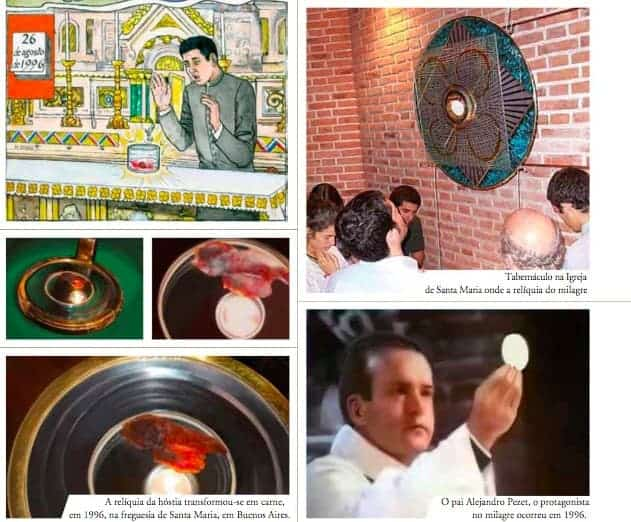
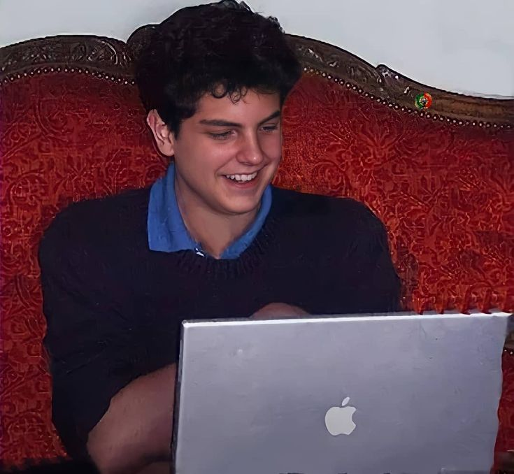

Legado Digital e Milagres
O impacto duradouro de Carlo Acutis na cultura digital e acreditadores.
Descubra o legado digital e os milagres atribuídos a Carlo Acutis, um jovem que inspirou muitos com sua devoção e paixão pela fé.
O "Programador de Deus"


Carlo era um gênio da informática. Ainda adolescente, aprendeu a programar e criou um site multilíngue documentando os milagres eucarísticos reconhecidos pela Igreja Católica ao redor do mundo. Esse projeto, concluído em uma época em que o desenvolvimento desses sites era dominado apenas por profissionais, lhe rendeu os apelidos de "Programador de Deus" e "ciberapóstolo".
Curiosidades:
- Carlo Acutis era um gênio da tecnologia. Aos 11 anos, criou o site "Milagres Eucarísticos", pesquisando por quatro anos e registrando mais de 160 milagres.
- Aprendeu várias linguagens de programação sozinho e também fazia sites para sua paróquia e escola.
Frases Famosas
Carlo deixou frases que se tornaram conhecidas entre seus devotos:
- "A Eucaristia é a minha auto-estrada para o céu."
- "Pessoas que se colocam diante do sol ficam bronzeadas; pessoas que se colocam diante da Eucaristia se tornam santas."
- "Estar sempre perto de Jesus: esse é o meu projeto de vida."
Os Milagres
1º Milagre – Brasil (2013)

Um jovem brasileiro, que sofria de uma doença rara, foi curado após orar pela intercessão de Carlo Acutis. A cura foi reconhecida pela Igreja Católica como milagre.
2º Milagre – Costa Rica (2022)
Uma mulher costarriquenha, que lutava contra um câncer terminal, foi curada após orar pela intercessão de Carlo Acutis. A cura foi reconhecida pela Igreja Católica como milagre.